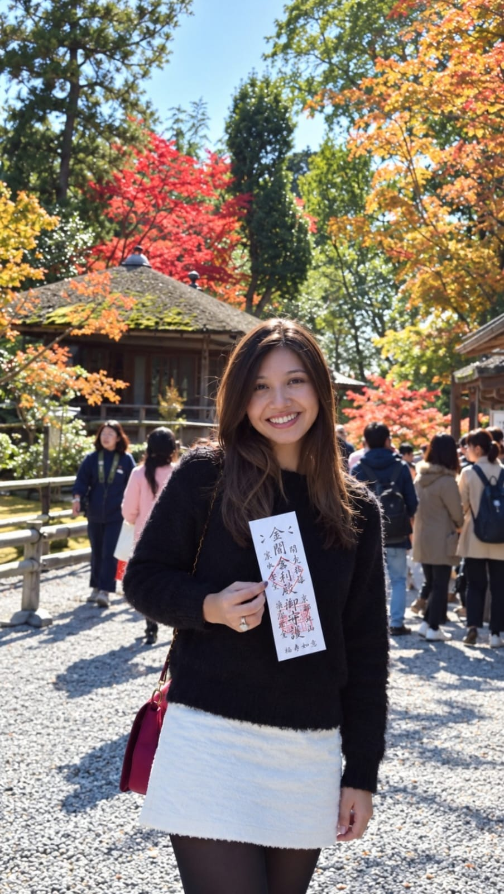
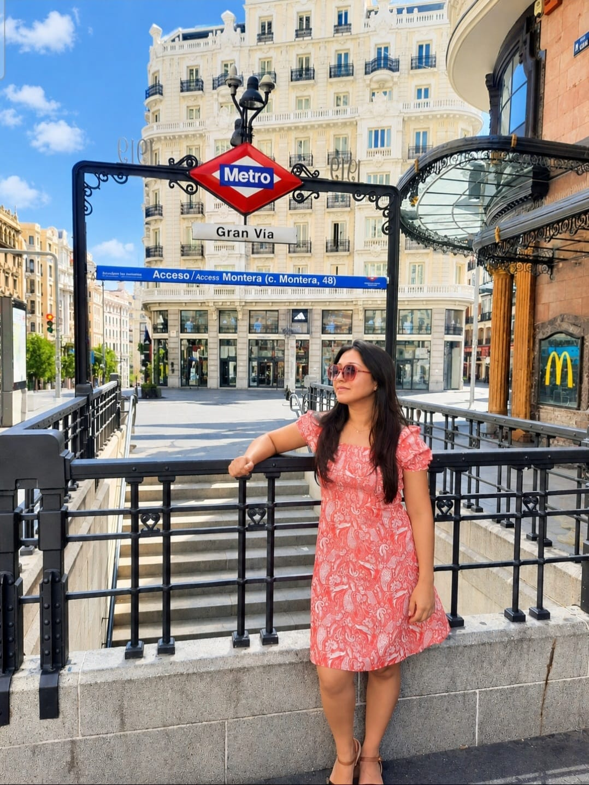
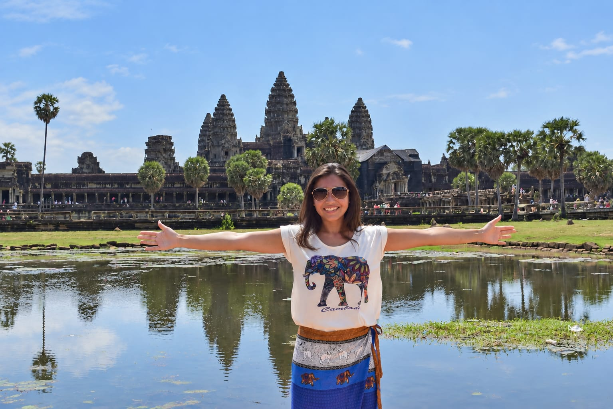

Mais vontade de viajar
Passei a olhar para as viagens com mais intenção e planejamento, procurando transformar cada destino numa verdadeira experiência.

A minha história
Sempre acreditei que viajar vai muito além de simplesmente conhecer novos lugares. Para mim, viajar significa criar memórias, descobrir novas perspectivas e viver momentos que ficam conosco para sempre.
Foi essa paixão que me levou a conhecer uma nova forma de planejar viagens e, mais tarde, a descobrir também uma atividade que hoje faz parte da minha jornada.
CONHECER A MINHA HISTÓRIA ↓Quando conheci este conceito, a minha primeira motivação não foi pensar numa atividade financeira. Foi perceber se existia realmente uma forma diferente de organizar e aproveitar melhor as minhas viagens com economia.
Comecei por fazer perguntas, pesquisar, entender como funcionava e analisar se aquilo fazia sentido para mim. Quanto mais conhecia, mais percebia que havia ali algo que se relacionava com aquilo que eu já valorizava: experiências, liberdade e conexão com pessoas.
Foi aí que conheci também a possibilidade de desenvolver uma atividade independente como Sócio Membro. Não como uma promessa de resultados fáceis, mas como uma atividade que poderia ser desenvolvida com consistência, aprendizagem e relações reais.
Então comecei a imaginar um novo capítulo: continuar a descobrir o mundo, estar presente na vida das minhas filhas e construir algo meu, ao meu ritmo. Um caminho que fizesse sentido para mim e para a vida que sempre sonhei viver com a minha família.
“Não comecei porque tinha todas as respostas. Comecei porque decidi conhecer melhor todas as possibilidades de mudança que este caminho poderia trazer para a minha vida.
Não se trata apenas de destinos. Trata-se também das experiências, aprendizagens e pessoas que encontramos pelo caminho.
Passei a olhar para as viagens com mais intenção e planejamento, procurando transformar cada destino numa verdadeira experiência.
Conheci pessoas com histórias, culturas e objetivos diferentes, muitas delas unidas pela mesma vontade de viver mais experiências e descobrir oportunidades de crescimento profissional.
Sair da zona de conforto trouxe aprendizagem, comunicação, disciplina e uma nova forma de olhar para projetos pessoais.
Descobri uma atividade independente que posso desenvolver respeitando o meu ritmo, os meus valores e a forma como gosto de trabalhar.
Acredito que nem todas as oportunidades sejam para todas as pessoas.
Por isso, a minha forma de trabalhar começa sempre pela informação. Prefiro que cada pessoa compreenda como funciona, faça perguntas, analise as condições e só depois decida se aquilo faz sentido para a sua realidade.
O meu objetivo não é convencer. É ajudar quem está interessado a tomar uma decisão mais consciente.
Alguns dos lugares, experiências e encontros que fazem parte desta jornada.

Cada destino tem uma história.

Momentos que nos transformam.
Novos lugares. Novas perspetivas.

Porque algumas experiências merecem ser vividas.
Nem sempre precisamos ter todas as respostas para dar o primeiro passo. Às vezes, basta abrir espaço para uma nova idéia, conhecer outras possibilidades e permitir-nos imaginar uma vida diferente. Para mim, a mudança começou assim: com perguntas, curiosidade e vontade de construir algo que fizesse sentido pra mim. Talvez este seja também o seu momento de descobrir o que quer viver daqui para a frente.
O que gostaria que fosse diferente na sua vida hoje?
Website independente de uma Independent inCruises Partner. Este não é o website corporativo oficial da inCruises. Não existem rendimentos garantidos.